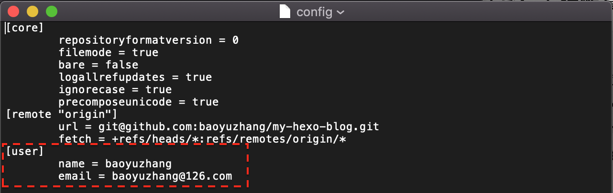

本文介绍git的三个配置文件，以及不同仓库使用不同用户信息的方法。
参考资料
git的配置文件
git通过配置文件来设置控制 Git 外观和行为，共有三个配置文件，权重为仓库级>全局级>系统级：
- 系统级
--system：/etc/gitconfig 文件，包含系统上每一个用户及他们仓库的通用配置； - 全局级
--global：~/.gitconfig 或 ~/.config/git/config 文件，只针对当前用户； - 仓库级
--local：.git/config，当前仓库的Git 目录中的 config 文件（就是 ）。
不同仓库使用不同用户信息
初次安装git时，曾执行如下命令设置你的用户名与邮件地址：
1 | git config --global user.name "John Doe" |
因为使用了 –global 选项，无论你在该系统上做任何事情， Git 都会使用这些信息。这些信息会写入到你的每一次提交中，且不可更改。工作电脑通常会全局配置公司邮箱和用户名，那么当提交到个人github时，也会使用公司邮箱和用户名。
我们想要的是提交个人github仓库使用个人用户名和邮箱，以下方法任选其一：
<方法一>如下命令可修改仓库级配置：
1 | git config user.name "John Doe" |
<方法二>打开仓库级配置文件修改：
1 | open .git/config |

完成后，再提交代码，git log查看提交信息，就会看到个人信息配置成功：